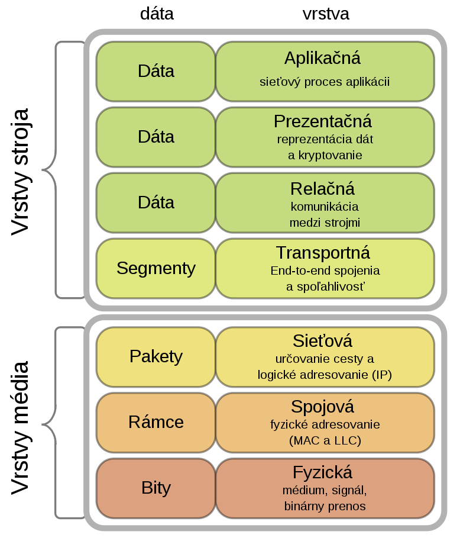
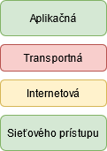

Základné sieťové pripojenie a komunikácia
Základné sieťové komponenty
- Koncové zariadenia:
- Sú to konečné zariadenia, ako napríklad počítač, mobil alebo server. Všetky majú jedinečnú IP adresu.
- Sieťové zariadenia:
- Sú to zariadenia, ktoré prepájajú koncové zariadenia a siete. Regenerujú komunikačné signály a uchovávajú informácie o existujúcich sieťach a cestách.
Prenášajú správy na základe priorít a bezpečnostných nastavení. Pri chybe, oznamujú ostatným zariadeniam chybu, a vytvárajú alternatívne cesty.
- Sieťové médiá:
- Sú to káble alebo signály ( bezdrôtové), po ktorých sú prenášané pakety.
Typy médií
- Medené káble - dáta sú kódované do elektrických impulzov
- Optické vlákna - dáta sú kódované do svetelných impulzov
- Bezdrôtová sieť - dáta sú kódované do elektromagnetických vĺn na základe frekvenčnej modulácie
Rozdiel medzi fyzickou a logickou topológiou
- Fyzická topológia:
- Zobrazuje fyzické prepojenia a identifikuje, ako sú prepojené koncové zariadenia a zariadenia infraštruktúry, napr. smerovače, prepináče a bezdrôtové pristúpové body.
- Logická topológia:
- Zobrazuje spôsob prenosu rámcov z jedného uzla na druhý, tieto logické cesty signálu sú definované L2 protokolmi.
Charakteristika základných typov PC sietí
- PAN:
- Osobná sieť.
- Lokálna sieť (LAN):
- Zahŕňa malú geografickú oblasť, kt. vlastní alebo prevádzkuje jednotlivec alebo IT oddelenie. Obvykle ju spravuje jedna organizácia alebo jednotlivec. Koncovým zariadeniam a zariadeniam sprostredkujúcim pripojenie, poskytuje vysokorýchlostnú šírku pásma.
- Metropolitná sieť (MAN):
- Zahŕňa väčšiu geografickú oblasť napríklad v rámci mesta,kraja.
- WAN sieť:
- Zahŕňa širokú geografickú oblasť, ktorá typicky zahŕňa poskytovateľa telekomunikačných služieb. Zariadenia vo WAN väčšinou poskytujú pomalšiu rýchlosť spojenia medzi LAN sieťami.
- Konvergovaná sieť:
- Umožňuje prenos viacerých služieb cez jedno prepojenie vrátane dát, hlasu a videa. Na rozdiel od špecializovaných sietí môžu konvergované siete poskytovať dáta, hlas a video medzi rôznymi typmi zariadení cez tú istú sieťovú infraštruktúru. Sieťová infraštruktúra používa rovnaký súbor pravidiel a štandardov.
Škálovateľnosť, Bezpečnosť, Odolnosť voči chybám a Kvalita služieb
- Škálovateľnosť:
- Škálovateľná sieť sa môže rýchlo a jednoducho rozšíriť (podpora nových používateľov a aplikácii) bez toho, aby ovplyvnila výkonnosť služieb pre existujúcich používateľov. Dizajnéri sietí dodržiavajú prijaté štandardy a protokoly.
- Bezpečnosť:
- Dva hlavné aspekty zabezpečenia siete sú bezpečnosť sieťovej infraštruktúry a informačná bezpečnosť.
Bezpečnosť sieťovej infraštruktúry
- Fyzické zabezpečenie sieťových zariadení
- Zabránenie neoprávnenému prístupu k SW pre správu na týchto zariadeniach.
Informačná bezpečnosť
- Ochrana informácii alebo údajov prenášaných cez sieť
Ciele zabezpečenia siete:
- Dôvernosť - údaje si vie prečítať len určený adresát
- Integrita - ubezpečenie, že údaje neboli počas prenosu zmenené
- Dostnupnosť - zabezpečenie včasného a spoľahlivého prístupu k údajom pre oprávnených používateľov
- Kvalita služieb
- Hlasové a živé vysielanie videa má vyššie očakávania pre doručenie služby. Kvalita služby je primárny mechanizmus používaný na zabezpečenie spoľahlivého poskytovania obsahu pre všetkých používateľov. Vďaka zavedeným pravidlám kvality služieb môže smerovač ľahšie spravovať tok dát a hlasového prenosu.
- Odolnosť voči chybám
- Sieť odolná voči chybám obmedzuje vplyv poruchy obmedzením počtu postihnutých zariadení. Na odolnosť voči chybám je potrebných viac ciest. Spoľahlivé siete poskytujú redudanciu implementáciou siete s prepínaním paketov. Prepínanie paketov rozdeľuje komunikáciu na pakety, ktoré sú smerované po sieti. Každý paket by teoreticky mohol mať k cieľu inú cestu. Tento prístup nie je možný v sieťach s prepájaním obvodov, ktoré vytvárajú vyhradené obvody.
Konzola, SSH a Telnet
- Konzolové rozhranie:
- Sériové rozhranie, ktoré sa používa predovšetkým na správu (počiatočná konfigurácia smerovača).
- Secure Shell (SSH):
- Pre vzdialené a bezpečné vytvorenie CLI relácie po sieti. Overenie používateľa, heslá a príkazy odoslané cez sieť sú šifrované. Ak je to možné používajte vždy SSH namiesto Telnet.
- Telnet:
- Pre vzdialené vytvorenie CLI relácie cez virtuálne rozhranie po sieti. Overenie používateľa, heslá a príkazy sa po sieti posielajú ako plain text.
Módy IOS a ich základná charakteristika
Režimy Cisco IOS používajú hierarchickú štruktúru príkazov. Každý režim je odlišný a používa sa na vykonanie konkrétnych úloh za použitia špecifickej skupiny príkazov, kt. sú k dispozícii iba v danom režime.
- Používateľský mód:
- Umožňuje len obmedzený počet základných príkazov na monitorovanie. Často sa označuje ako "režim len pre zobrazenie". Predvolene nie je na prístup do módu nastavená žiadna autentifikácia, ale mal by byť
zabezpečený.
- Privilegovaný mód:
- Umožňuje vykonanie príkazov na konfiguráciu a správu. Často sa označuje ako "enable mód", pretože od používateľa vyžaduje príkaz enable. Predvolene nie je na prístup do módu nastavená žiadna autentifikácia, ale mal by byť zabezpečený.
- Globálny konfiguračný mód:
- Príkaz pre vstup do módu configure terminal. Zmeny vykonané v tomto móde ovplyvňujú prevádzku zariadenia.
- Prechody:
- exit - do predchádzajúceho režimu
- end - na opustenie globálneho konfig. módu
- Ctrl + Z - funguje rovnako ako príkaz end
Metódy doručovania správ (unicast, multicast, broadcast)
- Unicast:
- Spôsob doručovania správy len jednému zariadeniu.
- Broadcast:
- Odosielanie správ všetkým zariadeniam bez ohľadu na to, či chcú alebo nechcú prijímať.
- Multicast
- Odosielanie správ len tým zariadeniam, ktoré ich chcú.
Modely OSI a TCP/IP
- Model OSI

- Fyzická - Do tejto vrstvy patria fyzikálne a elektrikcé špecifikácie zariadení, patrí sem rozloženie pinov, špecifikácia napätí a typov kábla. Na fyzickej vrstve pracujú Hub-y a repeater.
- Linková - Poskytuje funkcionalitu a prostriedky na prenos dát medzi dvoma susednými
systémami. Poskytuje detekciu, prípadne opravenie chýb, ktoré sa vyskytnú na fyzickej vrstve.
- Sieťová - Stará sa o smerovanie, kontrolu toku dát, segmentáciu, desegmentáciu a
kontrolu chýb.
- Transportná - Má na starosti spoľahlivosť daného spojenia. Má za úlohu poskytnúť takú kvalitu
prenosu ako požadujú vyššie vrstvy.
- Relačná - Poskytuje mechanizmus správy dialógu medzi aplikačnými procesmi koncového
používateľa. Táto vrstva nadväzuje a ukončuje TCP/IP relácie.
- Prezentačná - Transformuje dáta do podoby, ktorú používajú aplikácie (šifrovanie, konverzia,
komprimácia).
- Aplikačná - Implementuje rozhranie pre aplikačné procesy a poskytuje im služby.
- Model TCP/IP

- Aplikačná - Reprezentuje dáta od pouivateľa a pridáva dátam príponu. Zodpovedá za šifrovanie, vytvorenie a udržiavanie spojenia.
- Transportná - Zodpovedá za prenos dát od zdroja k cieľu.
- Internet - Ip adresácia zariadení, smeruje pakety.
- Network Access - Ukladá dáta na prenosové médium a generuje signál.
Spôsob zmeny adries MAC/IP pri komunikácií zariadení
Počas komunikácie sa IP adresa nemení a MAC adresa sa mení po každom vstupe do inej siete.
- Ak sú zariadenia v tej istej Ethernetovej sieti
- Použije sa priamo adresa cieľovej sieťovej karty. MAC adresy sú fyzicky vypálené na sieťovej karte.
- Zdrojová MAC adresa je adresa dátového spojenia alebo ethernetová MAC adresa zariadenia, ktoré odosiela rámec dátového spojenia so zapuzdreným paketom IP.
- Cieľová MAC adresa je adresa dátového spojenia prijímajúceho zariadenia.
- Ak je cieľové zariadenie v inej sieti.
- Keď sú odosielateľ a prijímač paketu IP v rôznych sieťach, rámec ethernetového dátového spojenia nemožno odoslať priamo cieľovému hostiteľovi. Rámec sa musí odoslať na iné zariadenie známe ako smerovač alebo predvolená brána.
- Zdrojová MAC adresa je adresa odosielajúceho zariadenia.
- Cieľová MAC adresa je adresa predvolenej brány alebo smerovača.